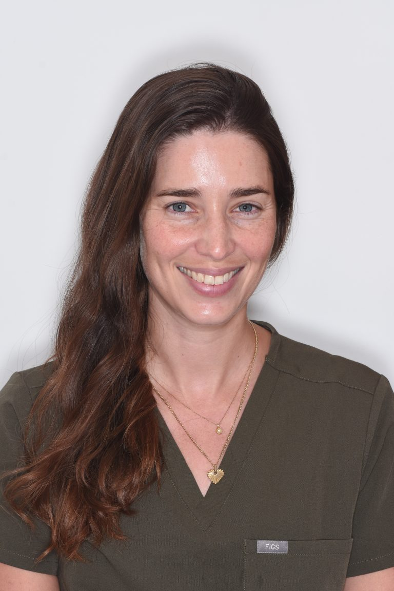

ד"ר טל שטרנברג, D.M.D
רפואת שיניים משמרת ושיקום, התרת לשון
בוגרת הפקולטה לרפואת שיניים באוניברסיטה העברית בירושלים.
בתהליך הכשרה והתמקצעות בתחום לשון קשורה והתרת לשון בתינוקות ופעוטות תחת הדרכתו של ד"ר אייל בוצר.
דוגלת בגישה טיפולית שמרנית תוך הקפדה על הקשבה מלאה, יחס אישי ויצירת אווירה נעימה, רגועה ובטוחה עבור המטופלים.
למרפאה של ד"ר מיכל אגר